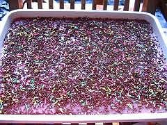

Dodol Puding Kacang

Bahan:
- 5 bungkus agar-agar bubuk coklat
- 500 gram gula pasir
- 2000 ml santan dari 2 butir kelapa, didihkan, dinginkan
- 90 gram coklat bubuk
- 1 kaleng (387 gram) susu kental manis coklat
- 1/4 sendok teh garam
- 100 gram kacang tanah, sangrai, giling untuk taburan
- ceres warna untuk hiasan
Cara Membuat:
- Campur semua bahan jadi satu, kecuali kacang tanah. Masak di atas api kecil sambil diaduk sampai mendidih.
- Tuang di loyang 22x22x4 cm. Taburi dengan kacang tanah. Bekukan dalam lemari es.
- Potong-potong dan hiasi dengan ceres warna.
Untuk 32 potong.